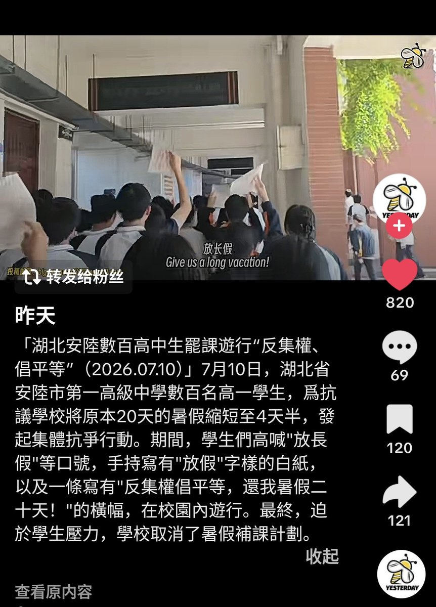

大狐帝国史官邹智萱（笔名段歌文）
@Rococo90933671
@ShoBeiYong 昨天啊，那不奇怪了，这个账号就像一个厕所，世界很大，本来就有不少藏污纳垢，而他偏偏要把所有的污垢都收集到一起，可不就是个厕所

魈✟ ❂☭ 電波系奇男子
@ShoBeiYong
学生们为多放假罢课示威常有
结果民逗巴不得他们死，要求假期到他们嘴里就变成反集权要平等了
难绷
（btw顺带感谢十年前我初中的初三学长们集体多次闹事给我们争取了整三年完整假期，在最卷的时代假期0缩减的含金量） https://t.co/gpqMFd4s60